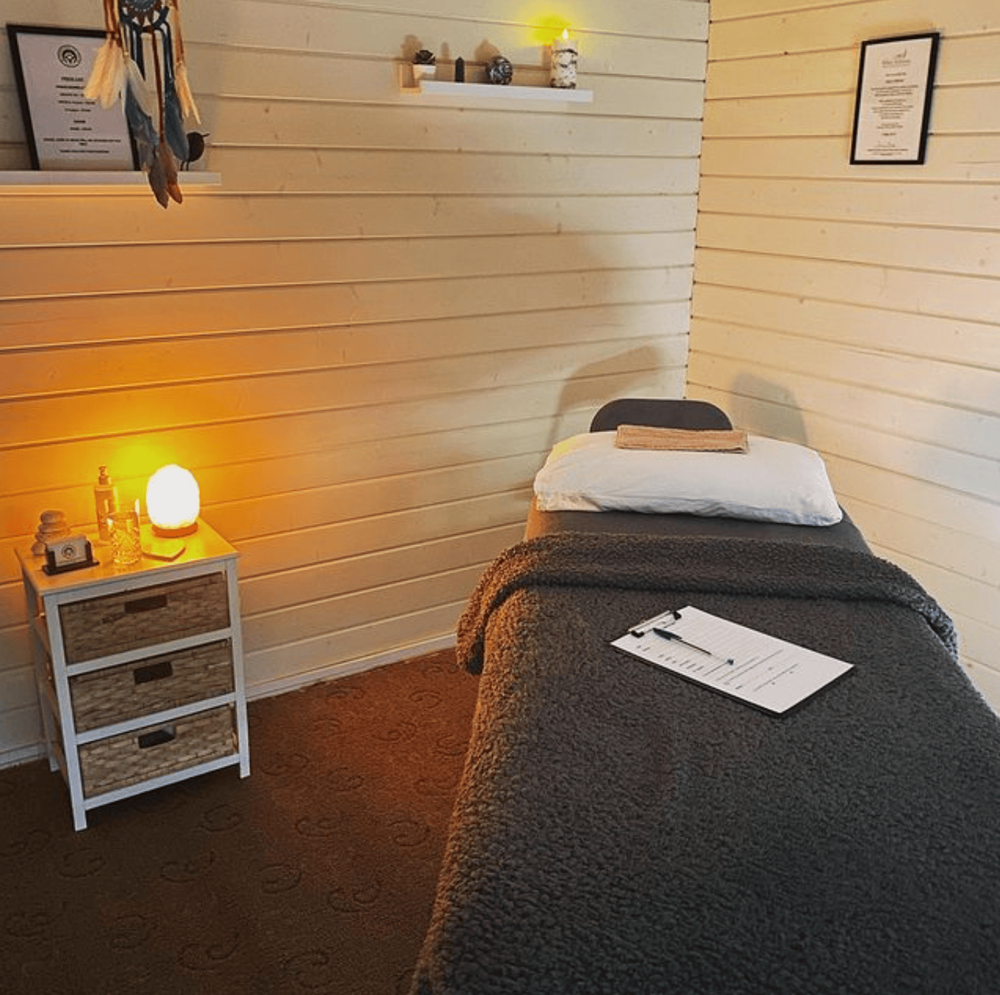
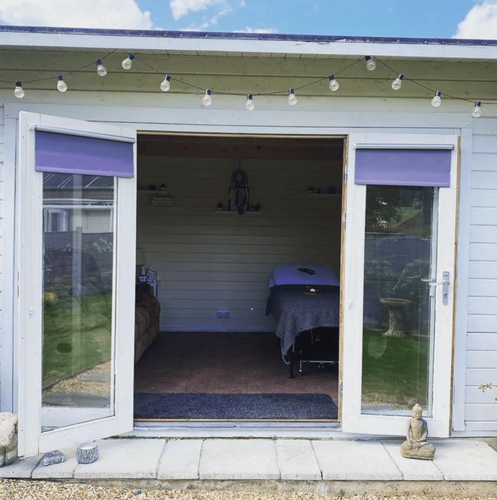
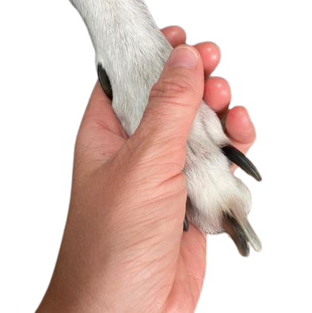

About
Thank-you for visiting my website, My name’s Sam and I am a fully insured and qualified bowen and reiki practitioner.
I used to work in the hospitality industry and in March 2012 I received a Bowen treatment for my shoulders. I could not believe the effectiveness of the treatment! This triggered me to want to learn more about the technique, and to be able to offer other people the benefits and relief that I experienced. Dogs have always been a big part of my life and love being in their company, So to be able to have a therapy that is beneficial to dogs and people is just amazing.
I have been fully qualified in human bowen since 2013 and canine bowen since 2015. In April 2023 I became a reiki practitioner, I feel reiki is a lovely therapy to add to my list!
Both therapies are gentle, non-invasive and performed through light clothing. I work out of my beautiful garden cabin from my home, in a quiet area of Frome, Somerset, my goal is to help you and when you walk out of my door I will keep in touch and see how you are doing, my door is always open for a chat and I hope you will always feel relaxed and comfortable in my company.
Please take a look at my website, I look forward to hearing from you. Sam
How does Bowen work?
- The Bowen technique is a holistic therapy, which means treating the body as a “whole” and not focusing on specific conditions or symptoms.
- The technique consists of a series of rolling type moves, across muscle, tendons and other soft tissue.
- I would use fingers and thumbs on specific areas, applying gentle pressure to effect a movement on the tissue.
- The Bowen technique can be used as a treatment for many common issues such as:
- Back and neck pain
- Sciatica
- Sports injuries
- Joint pain
- Infant colic
- Sporting and working dogs
- Stress and anxiety
- Ageing
- Palliative care
- And many many more
- Canine bowen works in a very similar way to treating people, the moves are the same, but the sessions are led by the dog to go at their own pace..
- With Canine Bowen I travel to treat them in their own home, this is where the dog is most relaxed.
- It’s important to say I DO NOT make claims to treat or cure specific conditions and you should ALWAYS consult your Dr / Vet if you have ANY concerns about yourself or your dog.
Reiki works on all levels - mental, emotional, spiritual & physical.

Treatments
The allocated time for each appointment is roughly 60 minutes, majority of the time this runs to 90 minutes, so please leave enough time to rest, relax and enjoy
All treatment is performed through light clothing, therefore it is advisable that you wear loose clothing for each session.
Upon arriving for your appointment you will be welcomed and a medical history will be taken, this is to identify the areas of their body I may need to focus on and also to note any medication you may be taking regularly.
During your treatment there will be no use of massage or essential oils, no hard tissue manipulation and no deep or prolonged pressure used.
If you are unable to make your appointment for any reason, a cancellation notice of at least 24 hours before would be very much appreciated please. If not there WILL be a charge.
It is gentle, subtle and a relaxing hands on treatment performed through light clothing, I use fingers and thumbs on specific areas, applying gentle pressure to the fascia.
During treatment there will be short periods of rest for your body to respond to the gentle moves that have been performed. These rest periods are an important part of the treatment and give the body time to make subtle and fine adjustments which help to rebalance, relieve tension and reduce pain.
Bowen is wonderful for all ages, any children under 16 should be supervised by a parent/carer. A course of 3 treatments over a period of 4-5 weeks are recommended for most clients, however this can be discussed with myself at the beginning of your treatment. After these 3 treatments it is advised to do ‘top up’ sessions to when suits your body and lifestyle.
Reiki is a Japanese word pronounced Ray-Key meaning ‘universal life giving energy’. Reiki is a holistic healing energy, which means it works the body as a whole, working the physical, emotional, mental and spiritual side within the body. The reiki energy balances and harmonises the chakras within us.
Reiki can bring a sense of peace, a feeling of being more centred and an ability to cope better with every day challenges life may bring. I would work through a series of hand placements covering key areas of the body and chakras. It is possible to work hands off for those that would prefer no human touch.
Veterinary permission is required prior to treatment. The moves are applied the same way as people, with fingers and thumbs making rolling type moves over the fascia.
Upon arrival and meeting your dog a full medical history is taken, this gives me a bigger picture to work out areas that could be a discomfort for your dog. The treatment pace is completely lead by your dog and this is really important that they have the freedom and space to come and go as they please, this also helps me gain the trust and respect from your dog.
A course of 3 treatments over a period of 4-5 weeks is recommended for most canine companions. Canine bowen is lovely for our golden oldies often suffering with stiffness, its gentle and non-invasive and to often see the changes in the dogs is wonderful, more energy, less stiffness, an interest in life again and more interaction with their family life, its always lovely to hear the feedback.
Price List
Prices cover a consultation and a treatment. Please note any
travel for me
over 10 miles from Frome, Somerset, will be charged 50p per mile.
Human Bowen
- Consultation
- 1 Hour Treatment
- Gentle & Non - Invasive
-
Adult (18+) £40.00
-
Child (5-17 years) £25.00
-
Infant (0-4 years) £15.00
Human Riki
- Consultation
- 1 Hour Treatment
- Reduce Stress & Anxiety
-
Adult (18+) £40.00
-
Child (5-17 years) £25.00
-
Infant (0-4 years) £15.00
Canine Bowen
- Consultation
- Promotes Agility
- For Dogs of all Ages!
-
Dogs (any age) £35.00
For all Canine Bowen , veterinary permission is required prior to treatment.
Gift Vouchers
Available all year round.
Not sure what to get a loved one for that special occasion, or as a’thank you’ present? Why not gift them a treatment at Head Toe Tail!
Adult treatments start from £40 for a one - hour treatment. Or whynot treat yourself? Treatments are delivered from Frome and surrounding areas.
Please get in touch if you would like to purchase a voucher.